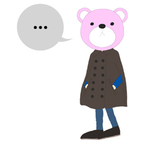

1. cape
길에서 아가씨들 입은거 보면 이뻐서
나도 하나 살려구 피팅룸서 입어봤다가
거울보자마자 바로
'삼각김밥'
이란 단어가 떠올라서 포기;; OTL
2. 11월 되면서 확실히 크리스마스&연말분위기 물씬
센트럴엔 사람 미어터진다 ㅡㅡ;;
이제는 옥스포드서커스쪽으로 걸어가기가 겁나;;;
사람이 너무너무너무 많아 ㅡㅜ
피카딜리서커스 역은 퇴근시간대 도저히 튜브탈 엄두가 안나서
걍 휘적휘적 걸어서 홀본까지 간다음에
버스타고 킹스크로스가서 튜브타기 ㅡㅡ;;;
갈아타는거 없이 집까지 25분 걸리면 뭐하나;;;;;
매일매일 아수라장;;;;;
(최근 막 한국서 온 아가씨는 강남역에 비하면 양반이라고 하는데
정말인가;; 어우;;;;; 이게 그냥 놀러(랜덤한 시간대에) 센트럴 나가는거랑
아침저녁 최고바쁠때 센트럴 출퇴근하는건 너무 다르다;;;)
하지만 주변에 쇼핑할곳 많다는곳은 참 훈늉(<-;;;;;)
3. 작년 이맘때쯤 부업(...)으로 외주하나 한게
제품으로 나와서 받아보았당
나름 팔리는 모양 다행이야 ㅜㅡ 흑흑
4. 최근 영화관도 평소에 비해 많이댕겨왔고
잼난 전시도 많이봤는데 포스팅 시기(?)를 놓치니까 안하게 된다 쩝
루퍼 / 프랑켄위니 / 사힐 영화관서 봤당
사힐은 너무 3D 테크닉 의식한 장면이 몇몇 보여서
오히려 촌스런 연출이란 느낌이 좀;;;
스토리는 말 안하겠음;;;; 오프닝에 회색 재가 내리는 장면은
정말 3D로 볼만했다 +_+
사힐 몬스터 디자인은 아무리봐도 넘 훌륭하다 ㅜㅜ
최근 Somerset House 전시 잼난거 많이한다
image 36 도 귀여웠고
Tim Walker : story Teller는 한번 더 볼 예정 (입장도 무료니께 희희)
좀있음 발렌티노 전시도 한다 +_+ 아이스링크는 오늘부터 개장이구나
.......겨울이네 겨울이야;;;;; 실감 안나라 ㅜㅜ
5. 센트럴 돌아댕기기 넘 힘들어서;;;
다행히도(?) 지름신은 떠나가셨당
하지만 동시에 주말에 조차 이쁜옷 입겠다는 의욕이 없셔
여기 매주 화요일마다 나눠주는 무료 패션 잡지 Stylist에
이번주에 패션매거진 에디터인가 스타일리스트분 인터뷰에서
Fashion is uncomfortable
이라고 하던데 난 comfortable이 좋아 ㅡㅜ 흑흑
그래도 오늘은 금요일 씐난다!! XD
매번 주말만 기다리는 외쿡인 로동자 라이프^^;;;;